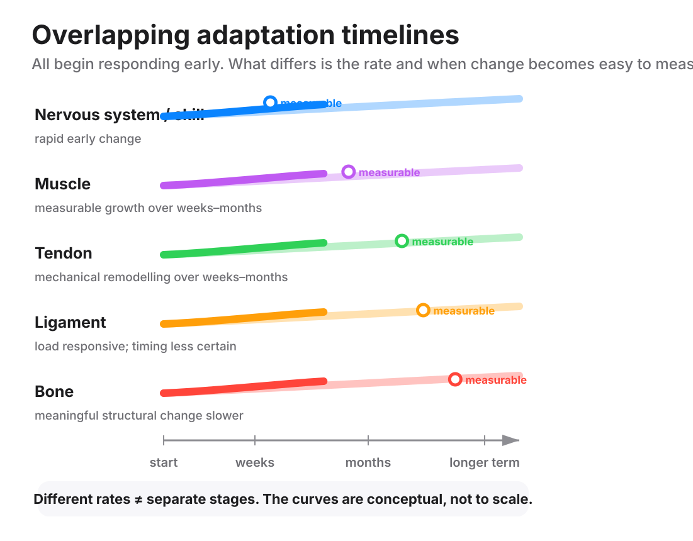

Muscle is not the only tissue that adapts to load. Tendon, ligament and bone respond to training too. Each one runs on its own clock. None of them sits in a queue waiting for the others to finish.

Tendon changes how it handles force before it changes size. Repeated loading remodels the collagen inside a tendon. That collagen is the fibrous protein a tendon is built from. Over time the tendon gains (stiffness): it stretches less under the same load. Some tendons also thicken a little. But the change in stiffness is usually bigger and more consistent than any change in size. This still happens in older adults, though the size of the change may be smaller.
The remodelling starts almost immediately. Being able to measure it takes far longer. Collagen-building activity inside a tendon rises within six hours of a single session. It peaks around 24 hours and stays raised for days afterward.
Turning that activity into a measurably stiffer tendon takes much longer. In one small block of held-still (isometric) training, over roughly three months, strength and muscle activation improved well before the tendon's stiffness became measurably different. Treat that as showing the order things happen in, not a countdown clock for any other lift or program.
Ligament responds to load too, and it is the tissue coaches know least about. Ligament remodels its own collagen. It can change shape and mechanical properties with repeated loading. Much of the detail on how much load, and how often, produces how much change comes from animal work rather than people. Teach ligament as load-responsive and nothing more precise than that. Never tell a client a ligament has "caught up" in a week. There is nothing behind a number like that.
Bone adapts by remodelling both how much of it there is and how it's arranged. Cells inside bone sense the strain it goes through. Over time they change its mass and its shape, its (geometry), in response. Four features of the loading matter most.
# Magnitude
sub: How large the strain is
What it does: A strain bigger than what the bone is already used to drives more remodelling than a habitual one.
# Rate
sub: How quickly the force arrives
What it does: A fast, jarring load counts for more than the same force applied slowly.
# Novelty
sub: A new direction
What it does: An unfamiliar loading direction beats thousands of reps in a familiar one.
# Frequency with recovery
sub: How often, with what rest
What it does: The response fades with constant repetition. Rest between bouts restores it.
Much of that detail again comes from animal work. In people, resistance training has measurably improved bone density at the spine, hip and thighbone neck in postmenopausal women. Higher-intensity, longer programs tend to do better, although results vary a lot between programs.
What this means for coaching. A lift climbing quickly is mostly a nervous-system and muscle story. It is not proof that the tendons, ligaments and bone carrying that load have caught up. Treat a fast-rising number as a reason to keep progressing sensibly, not as a green light to jump load.
A client returning after time off regains strength and skill quickly. Her tendons take longer to rebuild, and tendon properties are known to reduce during time away from training. Keep loading her as though her tendons are behind her lifts, even once the lifts themselves look normal again.
An older or postmenopausal client should not have meaningful loading removed from her program. Tendon stays adaptable at any age. Loading is one of the few things that reliably helps bone.
There is no fixed timetable. Nerves in two weeks, muscle in six, tendon in twelve, bone in six months is folklore, not doctrine. Those numbers confuse the point where a change becomes big enough to measure with the point where the adaptation actually started. Tendon, ligament, bone and muscle are all adapting from early on, at different rates, to different signals, and all at the same time.
stiffness: How much a tissue stretches for a given amount of force. A stiffer tendon stretches less under the same load.
isometric: A hold. The muscle works against the load but the joint does not move.
geometry: The shape and arrangement of a bone, as distinct from how much of it there is.